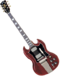
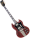

De: La Frikipedia, la enciclopedia extremadamente seria.
De: La Frikipedia, la enciclopedia extremadamente seria. De: La Frikipedia, la enciclopedia extremadamente seria.
«The show must go on...»
~ Alfredo Mercurio pidiendonos desde el cielo que nos conformemos con Paul Rodgers
La banda inglesa Queen fue creada en los años 70 por la casa real, que pretendía dar un giro a la carrera de la Reina Madre y colocarla al mando de una banda de rock. A la Reina Madre (voz y platillos) se le unieron otras reinas: la Reina Doña Sofía (tocando el chistu), la Reina Sonia de Noruega (segunda voz y batería. La batería se la tricotó ella misma) y Elton John (a la guitarra).
Queen era una banda con un fuerte componente moral, ya que la mayor parte de sus canciones iban dirigidas al buen uso del cuerpo, a la exaltación del amor y la amistad, y también, a coros de iglesia. Sus primeros sigles fueron I'm going to kiss you if you clean up my house, Born to be blind, Tomorrow, Tomorrow, Tomorrow y el exitazo Tea at 5 0'clock, que contó con arreglos de Mariano Rajoy.
Dado al éxito el single Tea at 5 0'clock, que se ubicaba en el puesto 239 del top 40, la casa real vio conveniente contratar un manager que administrara semejante éxito. Fue entonces, en el año de 1970, cuando el vendedor de ropa interior de la galería Farrokh Bulsara asumió parcialmente el timón del grupo y decidió dar un ``pequeño`` cambio.
Tras una reunión que duro 7 minutos, Farrokh logro convencer a la Reina Madre, Sofia, Sonia y Elton de que lo mejor para la banda era que ellas se dedicaran a otras cosas, como podían ser la prostitución o el trafico de estupefacientes.
Farrokh estaba decidido a llevar a Queen al éxito asi que saco su teléfono y se dispuso a contactar con los mejores músicos del Reino Unido, pero se llevo una desilusión al enterarse de que mozart y bethoven eran de austria, así que se conformo con sus compañeros de piso, Brian May y Roger Taylor.
Por aquel entonces Farrokh Bulsara pensó en que si quería triunfar debía cambiarse los dientes o el nombre, fue así como surgió su nombre de pila Max Power, cosa que tampoco funciono por cuestiones de marketing, así que tuvo que conformarse con llamarse Freddie Mercury.
En 1971, un año después, en un lapso de conciencia en medio de una borrachera en el puesto de tangas Freddie dijo ``Necesitamos alguien que nos toque los bajos``. Salieron del lugar dispuestos a encontrar un bajista, lo intentaron al principio entrenando vagabundos , incluso lo intentaron con un mono, quien no dio la talla y prefirió marcharse a Holliwood para actuar en Tarzan. Cuando casi perdían las esperanzas, uno de los clientes usuales de lencería, un tal John Deacon se aproximo a ofrecerles drogas a cambio de ropa interior con encaje, Brian May levanto los hombros y secuestraron a Deacon para convencerle de unirse a la banda, al principio este se negaba, pero cuando se amenazo con encerrarlo en un cuarto oscuro junto a Freddie acepto de manera inmediata, y fue así como nació Queen.
La banda ahora estaba conformada, Freddie Mercury (voz, piano, el que carga el piano, el que le pone ``on`` a la máquina de humo, animador de masas, diseñador del vestuario del grupo, compositor), Brian May (Guitarrista, repartidor de volantes para los conciertos, diseñador de los peinados del grupo, compositor, coros, cantaba cuando Freddie le daba permiso) Roger Taylor (Baterista, el que carga la batería, el que conseguía el licor y las gruppies, pagaba las facturas y multas, compositor, coros, cantaba cuando Freddie le daba permiso) John Deacon (Bajista, el que conseguía la yerba, evaluaba los hombres para Freddie, iluminación, compositor, coros, una vez le pidió permiso de cantar a Freddie, una vez).
Cuando la reina de Inglaterra murió le hicieron un álbum tributo a las 3 de la mañana(cuando David Bowie se dejó de drogar en el estudio) y también la quisieron reemplazar por un gran rey rata. Cuando se enteran que clonaron a la reina hicieron QueenII. Se destaca la canción los siete mares de...¡¿Qué?! con la cual se vueven famosos.
Debido a un ataque cardíaco hacen un album con ese nombre.Cuando se enteran que la reina mataba personas hicieron killer queen y basado en n acto de magia now I'm Here.
Luego de ver 2 películas con los hermanos Marx hacen a night at the opera y a day at the races. Estos álbumes incentivan a atar madres y arrepentirte cuando matas a alguien.
 Rock & Roll  Rock & Roll 
| ||
|---|---|---|
|
Bandas
Personajes
Variado
|
Autor(es):